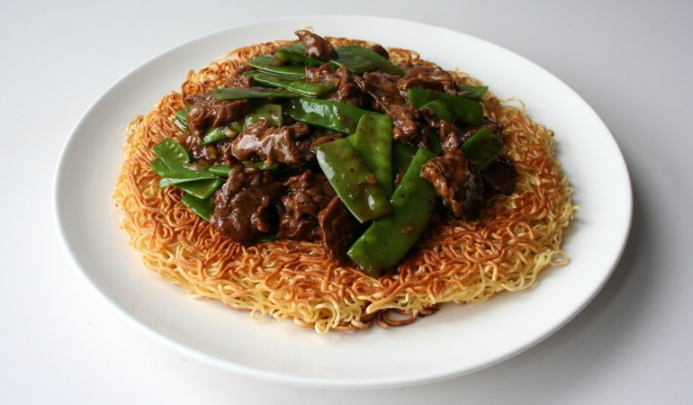

Chinese Pan Fried Noodles

Description
Pan Fried Noodles are my personal favorite dish
because I have been eating this noodle style since I was in middle
school. The name for Pan Fried Noodles can be different from Chow
Mein, for a traditional texture and taste, or Lo Mein, for a thicker
texture. Pan Fried Noodles comes from Shanghai And Suzhou.
Over time, the dish becomes a popular tradition for lunch or dinner.
Let's cook! :D
Ingredients
- 1 1/2 cups bean sprouts
- 2 scallions
- 2 teaspoons soy sauce
- 1 teaspoon dark soy sauce
- 1/2 teaspoon sesame oil
- 1/4 teaspoon salt
- 1/4 teaspoon sugar
- 1/2 tablespoon shaoxing rice wine
- 1/4 teaspoon white pepper
-
8 oz. fresh thin Hong Kong Style Egg Noodles (225g;
for pan-frying, not to be mistaken for “wonton noodles,”
or 3 small bundles of dried Hong Kong Style Egg Noodles for
pan-frying)
- 3 tablespoons vegetable oil
Steps
-
Bring 2 quarts of water to a boil. Rinse the bean sprouts in
cold water and drain. Julienne the scallions. Mix the soy
sauces, sesame oil, salt, sugar, wine and white pepper in a
small bowl and set aside.
-
Boil the noodles. Fresh noodles should be boiled for about
1 minute. For dried noodles, boil for 2 minutes. Rinse in cold
water and drain very well.
-
Heat the wok over high heat and add a tablespoon of oil to coat
the wok (you can also use a cast iron or non-stick pan for
this). Spread the noodles in a thin, even layer on the wok and
tilt the wok in a circular motion to distribute the oil and
crisp the bottom layer of the noodles evenly. It should take
about 5 minutes for the first side.
-
Flip the noodles over. add another tablespoon of oil around
the perimeter of the wok, and let the other side crisp up.
Don’t stress if you can’t turn the noodles over in one shot.
The goal here is just to get an even crispness and to dry out
the noodles during this cooking stage. Set the noodles aside
on a plate.
-
Heat the wok over high heat. Add a tablespoon of oil and all of
the white parts of the scallion to the pan. Cook for about 15
seconds. Next, add the noodles to the wok and toss them well,
breaking up the noodles so they’re not all in one big clump.
Add the soy sauce mixture and toss continuously for a couple
minutes. Keep the heat on high.
-
After the noodles are uniformly golden brown, add the bean
sprouts and toss. Add the rest of the scallions and toss the
mixture again for another 1 to 2 minutes until you see the bean
sprouts just starting to turn transparent. You want the sprouts
to be cooked but still crunchy.
- Serve!